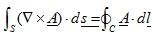
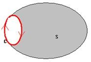

<div style="clear:both; border-bottom: solid 3px #5badee;">
    <h1 class="PageTitle1"><span id="ctl00_ctl00_ContentPlaceHolder1_TextContent_lbTitle">Stokes' Theorem</span></h1>
</div>
<div style="width: 618px; padding-top:10px; padding-bottom: 10px; clear:both;">
                <span id="ctl00_ctl00_ContentPlaceHolder1_TextContent_lbPageContent" class="formulaCss">The Stokes's Theorem is given by:<br>
<br>
<br>
The surface integral of the curl of a vector field over an open surface is equal to the closed line integral of the vector along the contour bounding the surface.<br>
<br>
</span>
            </div>